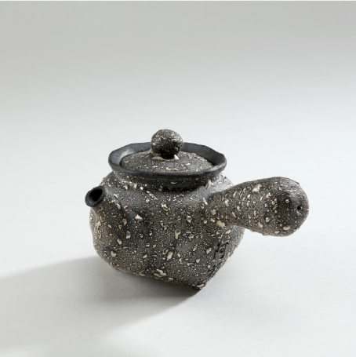

熟果香、重喉韻、耐沖泡是凍頂烏龍茶的特色，也是台灣傳統烏龍茶的代表。本公司以道地的烏龍茶菁製作，茶葉以中度發酵製成後，再經過100小時以上反覆烘焙，以2~3個月時間精製而成；口感濃郁渾厚勁道十足，是謂真正的「功夫茶」。



熟果香、重喉韻、耐沖泡是凍頂烏龍茶的特色，也是台灣傳統烏龍茶的代表。本公司以道地的烏龍茶菁製作，茶葉以中度發酵製成後，再經過100小時以上反覆烘焙，以2~3個月時間精製而成；口感濃郁渾厚勁道十足，是謂真正的「功夫茶」。
類別茶壺
大小6.1cm / 170cc
材料瓷器

在陶土的捏塑中，除了扎實的造型手藝，在質樸的調性中，掌握了適茶性的操作細膩平衡感。素樸、低調的作品風格所呈現的含蓄、內斂氣質，來自對平凡生命所自然流露的情感。回歸原創性的手工美學，讓有緣人細細體驗陶藝與茶道在生活上相遇的美好。